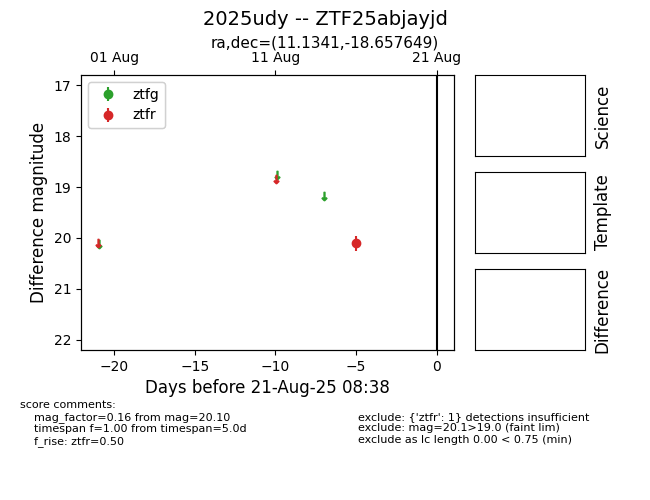

Target 2025udy at 2025-08-21 09:29, see:
FINK: fink-portal.org/ZTF25abjayjd
Lasair: lasair-ztf.lsst.ac.uk/objects/ZTF25abjayjd
ALeRCE: alerce.online/object/ZTF25abjayjd
TNS: wis-tns.org/object/2025udy
YSE: ziggy.ucolick.org/yse/transient_detail/2025udy
alt names
ZTF25abjayjd (ztf,alerce)
2025udy (tns,yse)
coordinates:
equatorial (ra, dec) = (11.1341,-18.65765)
galactic (l, b) = (111.9575,-81.38197)
photometry
last ztfr=20.10
1 ztfr detections
